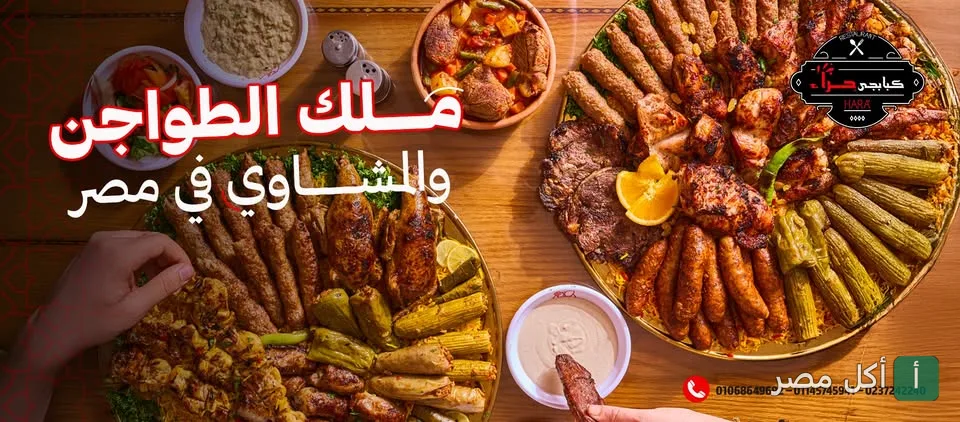

صينية العريس
بطاية، 4 حمامات، موزة ضاني، 4/3 كفتة كندوز، محاشي مشكلة، أرز بسمتي، طاجن ملوخية، سلطات وطحينة، عيش، عصير كبير
2 جنيه

الأسعار بالجنيه المصري من صفحة أكل مصر (آخر تحديث معلن: ٢٨ سبتمبر ٢٠٢٦). أكد السعر مع المطعم عند الطلب.
بطاية، 4 حمامات، موزة ضاني، 4/3 كفتة كندوز، محاشي مشكلة، أرز بسمتي، طاجن ملوخية، سلطات وطحينة، عيش، عصير كبير
2 جنيه
فرخة محشية، 2 حمام، 2/1 كفتة، 2/1 طرب، 2/1 شيش طاووق، 4/1 ستيك، 2 حواوشي، محاشي مشكلة، أرز بسمتي، سلطات وطحينة، عيش، عصير كبير
1 جنيه
2 حمام، نص شيش طاووق، نص كباب، نص كفتة، نص طرب، محاشي مشكل، أرز بسمتي، طحينة، سلطة، عيش، عصير كبير
1 جنيه
نص كفتة، ربع طرب، فرخة شيش، نص ممبار، ربع ستيك، سمبوسك، محاشي مشكل، أرز بسمتي، سلطة، طحينة، مخلل، عيش
1 جنيه
30 جنيه
35 جنيه
35 جنيه
40 جنيه
60 جنيه
70 جنيه
220 جنيه
170 جنيه
10 جنيه
10 جنيه
10 جنيه
10 جنيه
15 جنيه
15 جنيه
230 جنيه
230 جنيه
230 جنيه
230 جنيه
250 جنيه
300 جنيه
300 جنيه
340 جنيه
250 جنيه
35 جنيه
40 جنيه
60 جنيه
65 جنيه
50 جنيه
50 جنيه
75 جنيه
95 جنيه
80 جنيه
45 جنيه
50 جنيه
35 جنيه
35 جنيه
45 جنيه
55 جنيه
1 جنيه
1 جنيه
800 جنيه
820 جنيه
800 جنيه
800 جنيه
350 جنيه
800 جنيه
490 جنيه
530 جنيه
410 جنيه
480 جنيه
500 جنيه
300 جنيه
500 جنيه
330 جنيه
340 جنيه
370 جنيه
270 جنيه
175 جنيه
150 جنيه
60 جنيه
65 جنيه
70 جنيه
75 جنيه
80 جنيه
230 جنيه
ربع ورك - 8/1 كفته - 8/1 ستيك - أرز - سلطة - طحينة - عيش
260 جنيه
قطعة كفته - قطعة طرب - قطعة كباب - شريحة ستيك - سيخ شيش طاووق - بطاطس محمره - أرز بسمتي - سلطه - طحينه - عيش - علبه عصير
300 جنيه
ربع فرخة - أرز - سلطة - طحينة - عيش
110 جنيه
ربع ورك - أرز - خضار مشكل - سلطة - طحينة - عيش
130 جنيه
ربع كفته - أرز - سلطة - طحينة - عيش
135 جنيه
ربع ورك - 8/1 كفتة - أرز - سلطة - طحينة - عيش
150 جنيه
1/8 كفتة - 8/1 شيش طاووق - بطاطس - أرز بسمتي - سلطة - طحينة - عيش
180 جنيه
نص فرخة - أرز - سلطة - طحينة - عيش
180 جنيه
ربع ورك - قطعة كفته - قطعة طرب - أرز أبيض - خضار - سلطة - طحينة - عيش
165 جنيه
45 جنيه
55 جنيه
40 جنيه
25 جنيه
25 جنيه
100 جنيه
الأصناف والأسعار من صفحة أكل مصر المنشورة. أكد تفاصيل طلبك والسعر مع المطعم عند الاتصال.